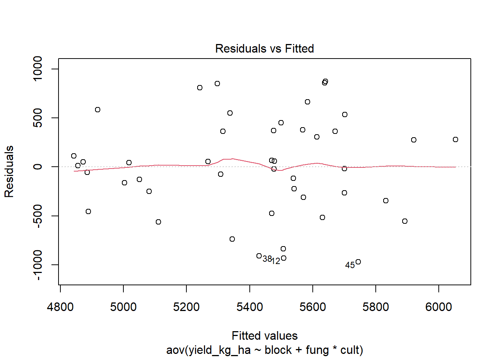
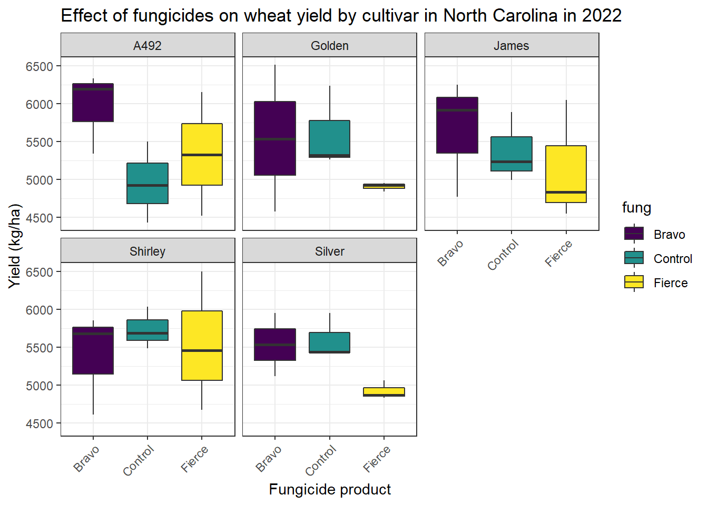

Part 2 - Data Wrangling and Analysis
In today’s session, we will be covering a few commonly used functions from R packages.
Examples consist of two xlsx files, the first
wheat_yield.xlsx containing yield data from small research
plots. In this exercise, we will transforming plot weight in lb per
125ft2 to kilograms per hectare and bushels per acre. This file contains
data from two different experiments “Stability” and
“Fungicide_cultivar”.
Our goal is to perform transformations that will be later transferred
to the trial master file (TMF), data_2022.xlsx, which is a
compilation of documents that prove that the experiment has been
conducted following regulatory requirements. The TMF should be set up at
the beginning of a trial. The essential documents that make up the file
should be kept in a secure but accessible manner. A well-kept TMF can
help with efficient trial management and can facilitate the
reconstruction of the conduct of the trial during the audit/inspection
process. Thedata_2022.xlsx contains “Stability” and
“Fungicide_cultivar” tabs, representing each experiment master file.
Yield transformations
We begin by loading packages in our R environment. This is a required step every time you plan on using the package’s functions.
Step 1: Installing and loading packages
#install.packages(c("readxl","tidyverse", "janitor","readr","lubridate"))
# Loading packages (everytime you open R)
library(readxl) # to read excel files
library(tidyverse) # data manipulation
library(janitor) # to clean data
library(readr) # to import csv
library(lubridate) # functions to work with date-times and time-spans
library(xlsx) # export xlsx
library(car) # for variance homogeneity and anova tests
library(emmeans) # extract the means
library(viridis) # add some cool colorsAnother way to accomplish the same goal is via pacman
package.
#install.packages(pacman)
#pacman::p_load(readxl, tidyverse, janitor, readr, lubridate, xlsx)
Step 2: Loading and evaluating data
Our goal in this module is to learn a few basic functions, including:
getwd() Get working directory. setwd()
Specify a working directory read_excel() Function of
readxl package. It reads xls and xlsx files.
glimpse() Function of dplyr package. Used to
see the columns of the dataset and display some portion of the data with
respect to each attribute that can fit on a single line.
str() Used for compactly displaying the internal structure
of a R object summary() Computes summary statistics of data
and model objects
Let’s first see where our working directory is. You may be able to
change that with setwd() and specify the location you want
to save your analysis and results.
getwd()## [1] "C:/Users/Garnica/Documents/GitHub/NCSU_R_workshop_2022"Once you have done that, we can now easily access the files for the
workshop. Once yield data has been read into R, we can take a look at it
with view().
wheat_yield = read_excel("files/wheat_yield.xlsx")
view(wheat_yield)Also can take a glimpse at the data.
glimpse(wheat_yield)## Rows: 69
## Columns: 8
## $ DATE <dttm> 2022-06-15, 2022-06-15, 2022-06-15, 2022-06-15, 2…
## $ RANGE <dbl> 6, 5, 4, 3, 2, 6, 5, 4, 3, 2, 6, 5, 4, 3, 2, 6, 5,…
## $ ROW <dbl> 2, 2, 2, 2, 2, 3, 3, 3, 3, 3, 4, 4, 4, 4, 4, 5, 5,…
## $ TRIAL <chr> "Fungicide_cultivar", "Fungicide_cultivar", "Fungi…
## $ PLOT <dbl> 101, 102, 103, 104, 105, 201, 202, 203, 204, 205, …
## $ weight_lb <dbl> 11.51, 13.86, 11.44, 14.97, 14.29, 12.39, 14.99, 1…
## $ `moisture_%` <dbl> 11.9, 12.1, 11.9, 12.0, 11.9, 12.0, 12.1, 11.9, 12…
## $ `test_weight_lb/bu` <dbl> 36, 5, 8, 19, 46, 30, 48, 18, 15, 31, 7, 24, 55, 4…The next two functions are going to be used to clean our variable
names. First we take a look on the variable names we have with
names(). Then we use clean_names, a function
of janitor package to obtain lowercase column names.We also
are going to create another object, different from what was uploaded, so
we don’t overwrite our initial data set.
names(wheat_yield)## [1] "DATE" "RANGE" "ROW"
## [4] "TRIAL" "PLOT" "weight_lb"
## [7] "moisture_%" "test_weight_lb/bu"wheat_yield_1<- clean_names(wheat_yield)For some reason that we will explain later, it will be beneficial to transform some variables that are numeric to factor. That can be accomplished in several ways.
wheat_yield_1 = wheat_yield_1 %>%
mutate_at(vars(plot),as.factor) What about the data structure? We discussed that in the first workshop. Why is this function important?
str(wheat_yield)## tibble [69 × 8] (S3: tbl_df/tbl/data.frame)
## $ DATE : POSIXct[1:69], format: "2022-06-15" "2022-06-15" ...
## $ RANGE : num [1:69] 6 5 4 3 2 6 5 4 3 2 ...
## $ ROW : num [1:69] 2 2 2 2 2 3 3 3 3 3 ...
## $ TRIAL : chr [1:69] "Fungicide_cultivar" "Fungicide_cultivar" "Fungicide_cultivar" "Fungicide_cultivar" ...
## $ PLOT : num [1:69] 101 102 103 104 105 201 202 203 204 205 ...
## $ weight_lb : num [1:69] 11.5 13.9 11.4 15 14.3 ...
## $ moisture_% : num [1:69] 11.9 12.1 11.9 12 11.9 12 12.1 11.9 12.1 12.2 ...
## $ test_weight_lb/bu: num [1:69] 36 5 8 19 46 30 48 18 15 31 ...str(wheat_yield_1)## tibble [69 × 8] (S3: tbl_df/tbl/data.frame)
## $ date : POSIXct[1:69], format: "2022-06-15" "2022-06-15" ...
## $ range : num [1:69] 6 5 4 3 2 6 5 4 3 2 ...
## $ row : num [1:69] 2 2 2 2 2 3 3 3 3 3 ...
## $ trial : chr [1:69] "Fungicide_cultivar" "Fungicide_cultivar" "Fungicide_cultivar" "Fungicide_cultivar" ...
## $ plot : Factor w/ 69 levels "101","102","103",..: 1 2 3 4 5 9 10 11 12 13 ...
## $ weight_lb : num [1:69] 11.5 13.9 11.4 15 14.3 ...
## $ moisture_percent : num [1:69] 11.9 12.1 11.9 12 11.9 12 12.1 11.9 12.1 12.2 ...
## $ test_weight_lb_bu: num [1:69] 36 5 8 19 46 30 48 18 15 31 ...Another way to accomplish the same thing is through
summary(). This function is also used to access results of
ANOVA, regression, etc…
summary(wheat_yield)## DATE RANGE ROW TRIAL
## Min. :2022-06-15 Min. :2.000 Min. : 2.00 Length:69
## 1st Qu.:2022-06-15 1st Qu.:3.000 1st Qu.: 5.00 Class :character
## Median :2022-06-15 Median :4.000 Median : 8.00 Mode :character
## Mean :2022-06-15 Mean :4.174 Mean :13.83
## 3rd Qu.:2022-06-15 3rd Qu.:5.000 3rd Qu.:27.00
## Max. :2022-06-15 Max. :6.000 Max. :31.00
## PLOT weight_lb moisture_% test_weight_lb/bu
## Min. :101.0 Min. : 6.10 Min. :11.50 Min. : 0.00
## 1st Qu.:302.0 1st Qu.:11.61 1st Qu.:11.90 1st Qu.:16.00
## Median :503.0 Median :12.72 Median :12.00 Median :29.00
## Mean :504.7 Mean :12.76 Mean :12.02 Mean :28.09
## 3rd Qu.:708.0 3rd Qu.:13.90 3rd Qu.:12.10 3rd Qu.:40.00
## Max. :909.0 Max. :16.39 Max. :13.30 Max. :55.00Great, we have loaded packages and the data and used a few common R functions!

Step 2: Data wrangling
Our goal here is to transform yield from lb/125ft2 to kg/ha or bu/a. The next set of functions are used to make that happen.
tidyverse is a collection of R packages
(dplyr, tidyr, readr,
purrr, ggplot2, and tibble)
created by world-famous data scientist Hadley Wickham.
select() Include or exclude certain variables (columns)
filter() Include or exclude certain observations (rows)
mutate() Create new variables (columns)
arrange() Change the order of observations (rows)
group_by() Organize the observations into groups
summarise() Derive aggregate variables for groups of
observations
After variable names have been cleaned, it is time to transform plot weight to bushels per acre or kilos per hectare. But before we start coding, we need to think about what steps are needed to get us to the desired result. Here are some thoughts:
We know the weight (lb), moisture (%), and area (125 ft2) of each plot. We also know that each plot has a measurement of moisture. As you may be familiar at this point, seed moisture is influenced by environmental conditions, including soil, cultivar, time of the day of harvest, etc. It is common practice to standardize plot weight to a value, which (I think) is 13% in soybeans,13.5% in wheat, etc. By standardizing all plots to the same moisture level, we will be only testing the effect of treatments on yield.
Here are the steps:
- transform plot weight from lbs to kg.
- calculate the dry weight for each plot
- add 13.5% moisture to each plot.
Adding columns to an existing data set can be accomplished with
mutate() in the following way. We also create another
object named wheat_yield_2.
wheat_yield_2 = wheat_yield_1 %>% # wait, what's %>%?
mutate(weight_kg = weight_lb*0.453592, # step 1
dry_weight = 0.01*(100-moisture_percent), # step 2
dry_weight_kg = weight_kg * dry_weight, # step 2
weight_13.5_kg = dry_weight_kg/0.865) # step 3Now that we have standardized each plot weight to a 13.5% moisture, it is time to convert the area from ft2 to hectare or/acre.
wheat_yield_2 = wheat_yield_2 %>%
mutate(area_ft2=125,# add a column of 125
acre=area_ft2*2.295684113865932e-05, # convert ft2 to acre
hec= acre*0.40469445568595708) # convert acre to hectare Now the easiest calculations.
wheat_yield_2 = wheat_yield_2 %>%
mutate(yield_kg_ha = weight_13.5_kg/hec,
yield_bu_a = weight_13.5_kg*2.20462262185/60/acre)Let’s take a closer look at our yield data now.
glimpse(wheat_yield_2)## Rows: 69
## Columns: 17
## $ date <dttm> 2022-06-15, 2022-06-15, 2022-06-15, 2022-06-15, 202…
## $ range <dbl> 6, 5, 4, 3, 2, 6, 5, 4, 3, 2, 6, 5, 4, 3, 2, 6, 5, 4…
## $ row <dbl> 2, 2, 2, 2, 2, 3, 3, 3, 3, 3, 4, 4, 4, 4, 4, 5, 5, 5…
## $ trial <chr> "Fungicide_cultivar", "Fungicide_cultivar", "Fungici…
## $ plot <fct> 101, 102, 103, 104, 105, 201, 202, 203, 204, 205, 30…
## $ weight_lb <dbl> 11.51, 13.86, 11.44, 14.97, 14.29, 12.39, 14.99, 11.…
## $ moisture_percent <dbl> 11.9, 12.1, 11.9, 12.0, 11.9, 12.0, 12.1, 11.9, 12.1…
## $ test_weight_lb_bu <dbl> 36, 5, 8, 19, 46, 30, 48, 18, 15, 31, 7, 24, 55, 49,…
## $ weight_kg <dbl> 5.220844, 6.286785, 5.189092, 6.790272, 6.481830, 5.…
## $ dry_weight <dbl> 0.881, 0.879, 0.881, 0.880, 0.881, 0.880, 0.879, 0.8…
## $ dry_weight_kg <dbl> 4.599563, 5.526084, 4.571590, 5.975440, 5.710492, 4.…
## $ weight_13.5_kg <dbl> 5.317414, 6.388537, 5.285076, 6.908023, 6.601725, 5.…
## $ area_ft2 <dbl> 125, 125, 125, 125, 125, 125, 125, 125, 125, 125, 12…
## $ acre <dbl> 0.002869605, 0.002869605, 0.002869605, 0.002869605, …
## $ hec <dbl> 0.001161313, 0.001161313, 0.001161313, 0.001161313, …
## $ yield_kg_ha <dbl> 4578.794, 5501.131, 4550.947, 5948.457, 5684.706, 49…
## $ yield_bu_a <dbl> 68.08656, 81.80169, 67.67248, 88.45342, 84.53144, 73…Yay! we got it. The only problem is that now we have created a lot of
auxiliary (no longer needed) columns. Let’s get rid of some them. We
will accomplish this via select(). This function works in
two ways: remove or keeping columns from existing data table object.
# remove undesired columns
wheat_yield_2 %>%
select(-weight_lb,-range) # removing two columns## # A tibble: 69 × 15
## date row trial plot moist…¹ test_…² weigh…³ dry_w…⁴ dry_w…⁵
## <dttm> <dbl> <chr> <fct> <dbl> <dbl> <dbl> <dbl> <dbl>
## 1 2022-06-15 00:00:00 2 Fung… 101 11.9 36 5.22 0.881 4.60
## 2 2022-06-15 00:00:00 2 Fung… 102 12.1 5 6.29 0.879 5.53
## 3 2022-06-15 00:00:00 2 Fung… 103 11.9 8 5.19 0.881 4.57
## 4 2022-06-15 00:00:00 2 Fung… 104 12 19 6.79 0.88 5.98
## 5 2022-06-15 00:00:00 2 Fung… 105 11.9 46 6.48 0.881 5.71
## 6 2022-06-15 00:00:00 3 Fung… 201 12 30 5.62 0.88 4.95
## 7 2022-06-15 00:00:00 3 Fung… 202 12.1 48 6.80 0.879 5.98
## 8 2022-06-15 00:00:00 3 Fung… 203 11.9 18 5.33 0.881 4.69
## 9 2022-06-15 00:00:00 3 Fung… 204 12.1 15 6.73 0.879 5.91
## 10 2022-06-15 00:00:00 3 Fung… 205 12.2 31 7.04 0.878 6.18
## # … with 59 more rows, 6 more variables: weight_13.5_kg <dbl>, area_ft2 <dbl>,
## # acre <dbl>, hec <dbl>, yield_kg_ha <dbl>, yield_bu_a <dbl>, and abbreviated
## # variable names ¹moisture_percent, ²test_weight_lb_bu, ³weight_kg,
## # ⁴dry_weight, ⁵dry_weight_kg# or alternatively: select only columns that are needed
wheat_yield_3 = wheat_yield_2 %>%
select(trial,plot,yield_kg_ha) # selecting 3 columnsGreat! We have a column of standardized plot yields. The next step is to add yield variable to the master file for each experiment.
Loading and merging data to trial master files
Now that we have calculated standardized yields, it is time to introduce the master file “data_2022.xlsx” that contains detailed information about the trial, including treatment number designation, blocks, location, etc. We will be merging yield file that we just managed with the master file, so that everything is tidy and at one place.
As you see, the file “data_2022.xlsx” contains two sheets(tabs), named “Stability” and “Fung_cult”, representing different experiments conducted last year.
Stability trial
We will be working with the “Stability” trial first. Go ahead and open the excel file, sheet name “Stability”. This experiment is evaluating the stability of cultivars to a foliar disease in wheat. The experiment was arranged in a randomized complete block design with two repetitions.
Let’s create a variable, simulating a scenario where a grad student
measured something, like plant height. In the Excel file, write
plant_height in the column name and enter random numbers
until all rows of plant_height have been filled.
Data simulations can EASILY be done in R, but I decided to do this exercise in Excel as an exercise just like you would enter data from our experiments.
Now, read the datasheet in R.
master_stability = read_excel("files/data_2022.xlsx",sheet = "Stability")
master_stability = clean_names(master_stability)
view(master_stability)glimpse(master_stability)## Rows: 24
## Columns: 4
## $ trial <chr> "Stability", "Stability", "Stability", "Stability", "Stability",…
## $ plot <dbl> 107, 108, 109, 207, 208, 209, 307, 308, 309, 407, 408, 409, 607,…
## $ block <chr> "A", "A", "A", "A", "A", "A", "A", "A", "A", "A", "A", "A", "B",…
## $ trt <dbl> 1, 2, 3, 4, 5, 6, 7, 8, 9, 10, 11, 12, 1, 2, 3, 4, 5, 6, 7, 8, 9…str(master_stability)## tibble [24 × 4] (S3: tbl_df/tbl/data.frame)
## $ trial: chr [1:24] "Stability" "Stability" "Stability" "Stability" ...
## $ plot : num [1:24] 107 108 109 207 208 209 307 308 309 407 ...
## $ block: chr [1:24] "A" "A" "A" "A" ...
## $ trt : num [1:24] 1 2 3 4 5 6 7 8 9 10 ...Working with R can be trick…. Note that in this file,
TRT is numeric… What’s the consequence of having a
treatment that is a factor (e.g. cultivar, fertilizer type, etc) as
numeric?
In reality, we need to transform these columns to factor. That can be achieved in many ways, but here are some suggestions:
# One way
#master_stability$plot = as.factor(master_stability$plot)
#master_stability$trt = as.factor(master_stability$trt)
# Second way
#master_stability = master_stability %>%
#mutate(plot = as.factor(plot), trt = as.factor(trt))
# Third way
master_stability = master_stability %>%
mutate_at(vars(plot,trt),as.factor) glimpse(master_stability) # check if it worked## Rows: 24
## Columns: 4
## $ trial <chr> "Stability", "Stability", "Stability", "Stability", "Stability",…
## $ plot <fct> 107, 108, 109, 207, 208, 209, 307, 308, 309, 407, 408, 409, 607,…
## $ block <chr> "A", "A", "A", "A", "A", "A", "A", "A", "A", "A", "A", "A", "B",…
## $ trt <fct> 1, 2, 3, 4, 5, 6, 7, 8, 9, 10, 11, 12, 1, 2, 3, 4, 5, 6, 7, 8, 9…We now have an organized master file with one variable
plant_height. For storage efficiency, we will add the yield
data (from previous exercise) to the master file. Beginning with
“Stability trial”…
As you may have noticed, wheat_yield_2 is a single sheet
that contains data for two experiments: “Fungicide_cultivar” and
“Stability”. “master_stability” data set however only contains data for
one trial, more specifically, “Stability”.
We are going to subset these two experiments and create new objects representing each trial. This is going to be a helpful exercise because you likely will need to merge your own data sets at some point in the future.
Stab_yield = filter(wheat_yield_3,trial=="Stability") # one way
Stab_yield = wheat_yield_3 %>%
filter(trial=="Stability") # another way
view(Stab_yield)The goal is now to merge yield data to the stability analysis. Luckily, both data sets have one common column, which makes it possible to merge them (think if it would be possible to combine files that do not have at least one overlapping id variable…). The function below can actually be used to merge columns with multiple criteria, but in this situation, PLOT is enough.
#left_join(master_stability,Stab_yield,by="plot")Merging the data sets
master_stability = left_join(master_stability,Stab_yield,by=c("plot","trial"))Fungicide x cultivar trial
Now, it is time to start working with the “Fungicide_cultivar” trial. This experiment is looking at how cultivars and fungicides impact disease development. The experiment was arranged in a 2-way factorial design with a randomized complete block design with three repetitions.
Go ahead and open the excel file, sheet name “Fungicide_cultivar”. Perform the steps above.
- load data into R with
read_excel()function. Make sure you select the correct sheet. - clean names with
clean_names()function
master_fung_cult = read_excel("files/data_2022.xlsx",sheet = "Fungicide_cultivar")
master_fung_cult = clean_names(master_fung_cult)
view(master_fung_cult)Now, just like it was done before, take a look on the data with
glimpse() function.
glimpse(master_fung_cult)## Rows: 45
## Columns: 7
## $ trial <chr> "Fungicide_cultivar", "Fungicide_cultivar", "Fungicide_cul…
## $ plot <dbl> 105, 303, 102, 104, 204, 203, 201, 205, 304, 103, 301, 101…
## $ block <chr> "A", "A", "A", "A", "A", "A", "A", "A", "A", "A", "A", "A"…
## $ trt <dbl> 1, 2, 3, 4, 5, 6, 7, 8, 9, 10, 11, 12, 13, 14, 15, 1, 2, 3…
## $ fung <chr> "Control", "Control", "Control", "Control", "Control", "Fi…
## $ cult <chr> "Shirley", "Golden", "A492", "Silver", "James", "Shirley",…
## $ disease_sev <dbl> 0.00000, 11.00000, 7.00000, 0.00000, 13.00000, 11.00000, 8…As well as with str().
str(master_fung_cult)## tibble [45 × 7] (S3: tbl_df/tbl/data.frame)
## $ trial : chr [1:45] "Fungicide_cultivar" "Fungicide_cultivar" "Fungicide_cultivar" "Fungicide_cultivar" ...
## $ plot : num [1:45] 105 303 102 104 204 203 201 205 304 103 ...
## $ block : chr [1:45] "A" "A" "A" "A" ...
## $ trt : num [1:45] 1 2 3 4 5 6 7 8 9 10 ...
## $ fung : chr [1:45] "Control" "Control" "Control" "Control" ...
## $ cult : chr [1:45] "Shirley" "Golden" "A492" "Silver" ...
## $ disease_sev: num [1:45] 0 11 7 0 13 11 8 13 8 10 ...Similarly to what was done before, let’s transform the variables
plot and trt from numeric to factor. You may
select any of the ways discussed above.
# Third way
master_fung_cult = master_fung_cult %>%
mutate_at(vars(plot,trt),as.factor) Let’s also create another singular data frame for the “Fungicide_cultivar” experiment.
fung_cult_yield = wheat_yield_3 %>%
filter(trial=="Fungicide_cultivar") # another wayWe also will be addind the yield variable to the master file. All the steps are done as before.
Go ahead and merge yield and master file data sets with
left_join().
master_fung_cult =
left_join(master_fung_cult,wheat_yield_3,by=c("plot","trial"))Cool. we are all set!
Exporting files as a xlsx format
Now that we have created individual data frames for each trial and correctly collated the yield variable to the trial master files, it is time to export these files out of R and into your computer. This is important because your adviser may ask you to turn all your data as a xlsx/csv file.
This can be easily achieved with the function
write.xlsx(). Note that for this exercicie, we could either
create separate trial master files for each trial or create a single
trial master file and annotate the individual trials as sheets within
the single file. But now, I would like you to save the trial master file
in your desktop.
That’s what we are going to do:
#write.xlsx(master_fung_cult,'c:/Users/Garnica/Desktop/trial_master_2022.xlsx', sheetName="fung_cult") # note that we changed the directory
#write.xlsx(master_stability,'c:/Users/Garnica/Desktop/trial_master_2022.xlsx', sheetName="stability", append = TRUE) # appending
Analyzing data
Before use a two-way ANOVA your data should meet certain assumptions.Two-way ANOVA makes all of the normal assumptions of a parametric test of difference:
- Homogeneity of variance (a.k.a. homoscedasticity)
- Independence of observations
- Normally-distributed dependent variable
Step 1: Homogeneity of variance (a.k.a. homoscedasticity)
Check the homogeneity of variances with Levene’s test. The
leveneTest() method [from the car package] will be
used:
leveneTest(yield_kg_ha ~fung*cult,data=master_fung_cult)## Levene's Test for Homogeneity of Variance (center = median)
## Df F value Pr(>F)
## group 14 0.5524 0.8798
## 30The p-value is not less than the significance level of 0.05, as seen in the output above. This indicates that there is no indication that the variance across groups is statistically significant.
Step 2: Fitting the model
The linear model for this study is : \(Y= block + cultivar + fungicide + cultivar:fungicide + error\)
two.way <- aov(yield_kg_ha ~ block + fung*cult, data = master_fung_cult)That’s great. Before we look into the results, let’s check some of the assumptions.
Step 3: Normally distributed errors
plot(two.way, 1)
aov_residuals <- residuals(object = two.way)
shapiro.test(x = aov_residuals )##
## Shapiro-Wilk normality test
##
## data: aov_residuals
## W = 0.97425, p-value = 0.4086The Shapiro-Wilk test on the ANOVA residuals (W = 0.97, p = 0.4086), which finds no evidence of normality violation, supports the previous conclusion.
Step 4: Hypothesis testing
Our hypothesis is that cultivars, fungicides, and their interaction have no effect on wheat yield. In other words:
Hypothesis testing for cultivars \[H_0: \mu_1 = \mu_2 = \mu_3 = \mu_4 = \mu_5 \] \[H_1: \text{at least one cultivar effect is different.}\]
Hypothesis testing for fungicides
\[H_0: \mu_1 = \mu_2 = \mu_3 \] \[H_1: \text{at least one fungicide effect is different.}\]
Hypothesis testing for the interaction between cultivars and fungicides \[H_0: \mu_{11} = \mu_{21} = \mu_{31} = \mu_{41} = \mu_{51} \mu_{12} = \mu_{22} = \mu_{32} = \mu_{42} = \mu_{52} \mu_{13} = \mu_{23} = \mu_{33} = \mu_{43} = \mu_{53}\] \[H_1: \text{at least one combination of cultivar and fungicide is different.}\]
We will be analyzing one of the experiments using ANOVA. ANOVA, which stands for Analysis of Variance, is a statistical test used to analyze the difference between the means of more than two groups. A one-way ANOVA uses one independent variable, while a two-way ANOVA uses two independent variables.
Anova(two.way,type="III")## Anova Table (Type III tests)
##
## Response: yield_kg_ha
## Sum Sq Df F value Pr(>F)
## (Intercept) 92801164 1 238.0261 3.223e-15 ***
## block 220929 2 0.2833 0.7554
## fung 1537238 2 1.9714 0.1581
## cult 552638 4 0.3544 0.8388
## fung:cult 2340803 8 0.7505 0.6475
## Residuals 10916585 28
## ---
## Signif. codes: 0 '***' 0.001 '**' 0.01 '*' 0.05 '.' 0.1 ' ' 1summary(two.way)## Df Sum Sq Mean Sq F value Pr(>F)
## block 2 220929 110464 0.283 0.755
## fung 2 1510258 755129 1.937 0.163
## cult 4 246165 61541 0.158 0.958
## fung:cult 8 2340803 292600 0.750 0.648
## Residuals 28 10916585 389878Dfshows the degrees of freedom for each variable (number of levels in the variable minus 1). Except for the the errorSum sqis the sum of squares (a.k.a. the variation between the group means created by the levels of the independent variable and the overall mean).Mean sqshows the mean sum of squares (the sum of squares divided by the degrees of freedom).F valueis the test statistic from the F-test (the mean square of the variable divided by the mean square of each parameter).Pr(>F)is the p-value of the F statistic, and shows how likely it is that the F-value calculated from the F-test would have occurred if the null hypothesis of no difference was true.
From this output we can see that neither cultivar or fungicide type have an significant effect on crop yield.
Step 5: Compute summary statistics
This step we obtain the means for each factor and their interaction.
# Means for cultivars
emmeans(two.way, ~ cult)## NOTE: Results may be misleading due to involvement in interactions## cult emmean SE df lower.CL upper.CL
## A492 5413 208 28 4987 5840
## Golden 5351 208 28 4925 5777
## James 5388 208 28 4962 5814
## Shirley 5551 208 28 5125 5978
## Silver 5352 208 28 4926 5778
##
## Results are averaged over the levels of: block, fung
## Confidence level used: 0.95# Means for fungicides
emmeans(two.way, ~ fung)## NOTE: Results may be misleading due to involvement in interactions## fung emmean SE df lower.CL upper.CL
## Bravo 5611 161 28 5281 5942
## Control 5453 161 28 5123 5783
## Fierce 5169 161 28 4838 5499
##
## Results are averaged over the levels of: block, cult
## Confidence level used: 0.95# Means for interaction
emmeans(two.way, ~ fung*cult)## fung cult emmean SE df lower.CL upper.CL
## Bravo A492 5955 360 28 5217 6694
## Control A492 4953 360 28 4214 5691
## Fierce A492 5332 360 28 4594 6071
## Bravo Golden 5542 360 28 4804 6281
## Control Golden 5604 360 28 4866 6343
## Fierce Golden 4906 360 28 4168 5645
## Bravo James 5647 360 28 4908 6385
## Control James 5372 360 28 4634 6110
## Fierce James 5145 360 28 4407 5883
## Bravo Shirley 5379 360 28 4641 6117
## Control Shirley 5735 360 28 4996 6473
## Fierce Shirley 5540 360 28 4802 6279
## Bravo Silver 5534 360 28 4795 6272
## Control Silver 5603 360 28 4864 6341
## Fierce Silver 4920 360 28 4181 5658
##
## Results are averaged over the levels of: block
## Confidence level used: 0.95Step 6: Plotting results
To wrap up our workshop, we will produce a plot of the cultivars and fungicides on wheat yield.
ggplot(master_fung_cult,aes(x=fung,y=yield_kg_ha,fill=fung))+
geom_boxplot()+
facet_wrap(~cult)+
scale_fill_viridis_d() +
theme_bw()+
labs(x = 'Fungicide product', y="Yield (kg/ha)", title= 'Effect of fungicides on wheat yield by cultivar in North Carolina in 2022')+
theme(axis.text.x = element_text(angle = 45, hjust = 1)) 